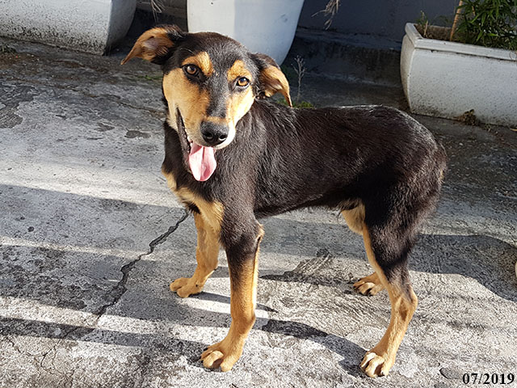
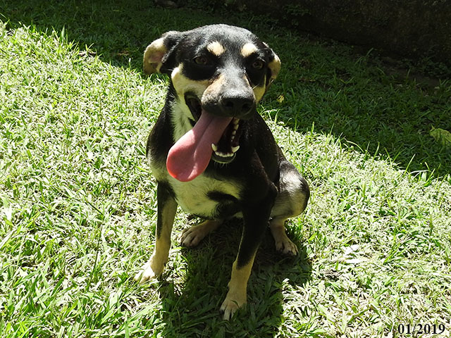

Cachorros

Nome(Animal): Tony
Raça: SRD
Idade: 4 anos e 6 meses
Sexo: Macho
Temperamento: Alegre, Amoroso, Brincalhão
Historia: Bela é uma cachorra que ficava no centro de Juquitiba e teve a cria lá. Foram recolhidos ela e seus 8 filhotes.

Nome(Animal): Lupe
Raça: SRD
Idade: 1 anos e 4 meses
Sexo: Macho
Temperamento: Alegre, Amoroso, Brincalhão
Historia: Foi abandonado com os irmãos numa caixa no portão da ONG.

Nome(Animal): Lia
Raça: SRD
Idade: 5 anos e 1 meses
Sexo: Femea
Temperamento: Alegre, Amoroso, Brincalhão
Historia: Foi abandonada no portão da ONG em uma caixa plástica com suas quatro irmãs.